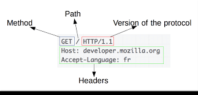

It is an HTTP request from your computer to a serverside application for information
The parts of a network request are the header and the body
JSON stands for Javascript Object Notation.
JSON is a format for storing and tranporting data
The JSON syntax is derived from JavaScript object notation syntax, but the JSON format is text only. Code for reading and generating JSON data can be written in any programming language.
HTTP is a synchronous protocol. The client sends a request and waits for a response from the service. That's independent of the client code execution that could be synchronous (thread is blocked) or asynchronous (thread isn't blocked, and the response will reach a callback eventually)